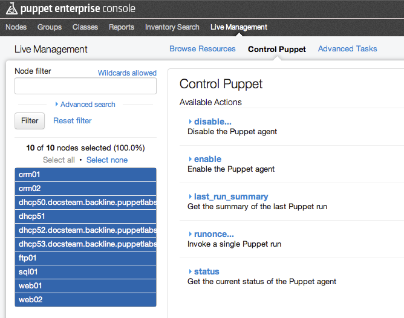
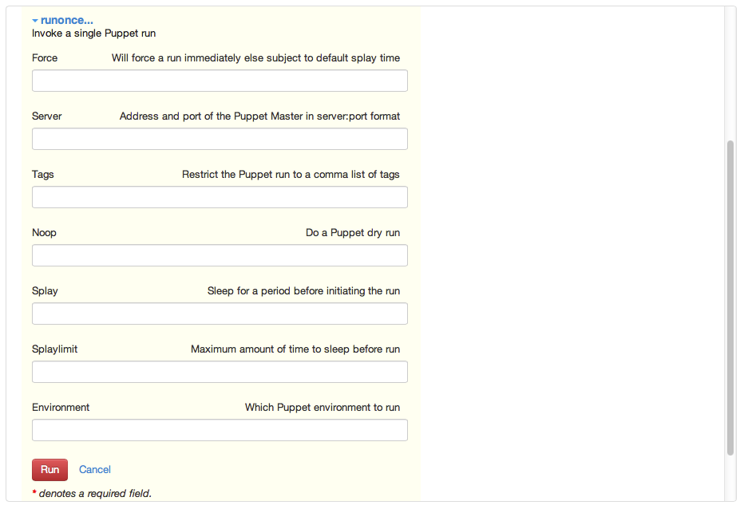
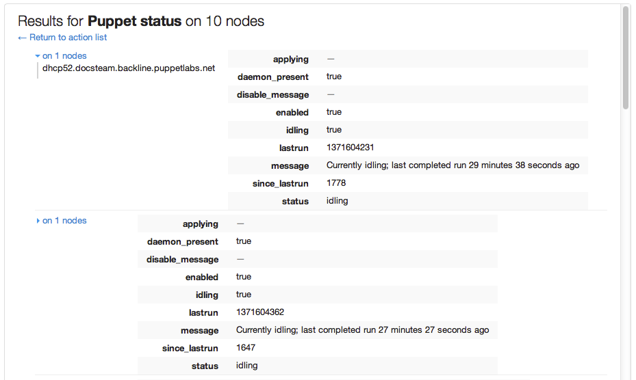
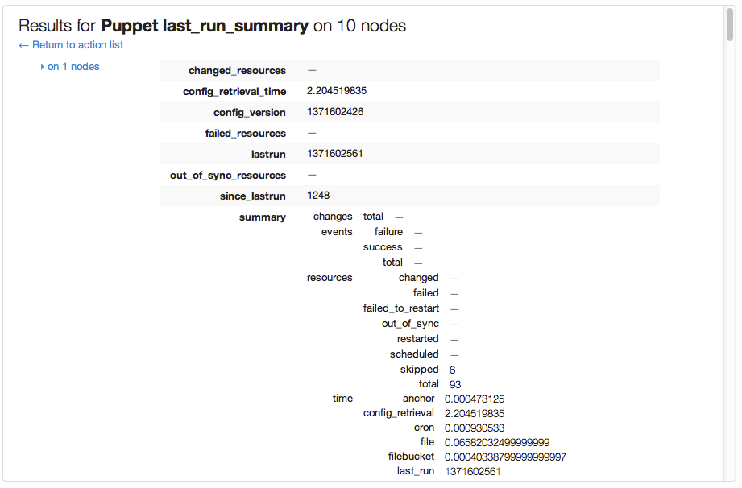

Orchestration: Controlling Puppet
Puppet Enterprise (PE)’s configuration management features rely on the puppet agent service, which runs on every node and fetches configurations from the puppet master server. (See the Puppet section of this manual for more details.)
By default, puppet agent idles in the background and performs a run every 30 minutes, but the orchestration engine can give complete control over this behavior. See the table of contents above for an overview of the available features.
Note: The orchestration engine cannot trigger a node’s very first puppet agent run. A node’s first run will happen automatically within 30 minutes after you sign its certificate.
Basics
Invoking Actions
The orchestration engine can control Puppet from the PE console and from the puppet master server’s Linux command line. These interfaces don’t have identical capabilities, so this page will call out any differences when applicable.
See the following pages for basic instructions on invoking actions, including how to log in:
In the console, most of these tasks use the “Control Puppet” tab of the live management page, which behaves much like the “Advanced Tasks” tab. On the command line, most of these tasks use the mco puppet subcommand.

The Puppet Agent Service
In PE 3.0, puppet agent runs in the background as a system service.
- On *nix nodes, this service is named
pe-puppet. - On Windows nodes, this service’s display name is
Puppet Agentand its short name ispe-puppet.
Agent Status: Enabled, Disabled, etc.
Puppet agent can be in many possible states, which are represented by three attributes:
- Running or stopped — whether the agent service (
pe-puppet) is running in the background. Even if it’s running, the service may or may not be doing anything at the moment. If the service is stopped, no scheduled runs will occur but you can still trigger on-demand runs. - Applying, idling, or neither — whether puppet agent is in the process of applying a configuration. Idling is only applicable if the service is running, but Puppet may be applying an on-demand configuration even if the service is stopped.
- Enabled or disabled — whether there’s a lockfile preventing puppet agent from performing any configuration runs. If puppet agent is disabled, the service can idle in the background but no configurations can be applied — even on-demand runs will be rejected until the agent is re-enabled.
The orchestration engine can trigger on-demand Puppet runs unless the agent is applying or disabled. Scheduled runs will only take place if the agent is both running and enabled.
Run Puppet on Demand
Use the runonce action to trigger an immediate Puppet run on a few nodes. If you need to run Puppet on many nodes (more than about 10), you should see the “many nodes” section below.
Behavior Differences: Running vs. Stopped
You can trigger on-demand Puppet runs whether the
pe-puppetservice is running or stopped, but on *nix nodes these cases will behave slightly differently:
- When the service is running, all of the selected nodes will begin a run immediately, and you cannot specify any special options like
nooportags; they will be ignored. This behavior is usually fine but sometimes undesirable.- When the service is stopped, the selected nodes will randomly stagger the start of their runs (“splay”) over a default interval of two minutes. If you wish, you can specify special options, including a longer interval (“splaylimit”). You can also set the
forceoption totrueif you want the selected nodes to start immediately. This behavior is more flexible and resilient.This difference only affects *nix nodes; Windows nodes always behave like a stopped *nix node. The difference will be addressed in a future version of PE; for now, you may wish to stop the
pe-puppetservice before trying to donooportagsruns.
In the Console
While logged in as a read/write or admin user, navigate to the Control Puppet tab, filter and select your nodes, and click the “runonce” action. Enter any arguments, and click the red “Run” button.

Arguments
If the agent service is stopped (on affected *nix nodes; see above), you can change the way Puppet runs by specifying optional arguments:
- Force (
true/false) — Ignore the default splay and run all nodes immediately. - Server — Contact a different puppet master than normal. Useful for testing new manifests (or a new version of PE) on a subset of nodes.
- Tags (comma-separated list of tags) — Apply only resources with these tags. Tags can be class names, and this is a fast way to test changes to a single class without performing an entire Puppet run.
- Noop (
true/false) — Only simulate changes, and submit a report describing what would have changed in a real run. Useful for safely testing new manifests. If you have configured puppet agent to always run in no-op mode (via/etc/puppetlabs/puppet/puppet.conf), you can set this tofalseto do an enforcing Puppet run. - Splay (
true/false) — Defaults to true. Whether to stagger runs over a period of time. - Splaylimit (in seconds) — The period of time over which to randomly stagger runs. The more nodes you are running at once, the longer this should be.
- Environment — The Puppet environment in which to run. Useful for testing new manifests on a subset of nodes.
On the Command Line
While logged in to the puppet master server as peadmin, run the mco puppet runonce command.
$ mco puppet runonce -I web01.example.com -I web02.example.com
$ mco puppet runonce -F kernelversion=2.6.32
Be sure to specify a filter to limit the number of nodes; you should generally invoke this action on fewer than 10 nodes at a time, especially if the agent service is running and you cannot specify extra options (see above).
Extra Options
If the agent service is stopped (on affected *nix nodes; see above), you can change the way Puppet runs with command line options. You can see a list of these by running mco puppet --help.
--force Bypass splay options when running
--server SERVER Connect to a specific server or port
--tags, --tag TAG Restrict the run to specific tags
--noop Do a noop run
--no-noop Do a run with noop disabled
--environment ENVIRONMENT Place the node in a specific environment for this run
--splay Splay the run by up to splaylimit seconds
--no-splay Do a run with splay disabled
--splaylimit SECONDS Maximum splay time for this run if splay is set
--ignoreschedules Disable schedule processing
The most useful options are:
--noop, which causes puppet agent to only simulate changes, and submit a report describing what would have changed in a real run. Useful for safely testing new manifests. If you have configured puppet agent to always run in no-op mode (via/etc/puppetlabs/puppet/puppet.conf), you can use--no-noopto do an enforcing Puppet run.--environment ENVIRONMENT, which causes puppet agent to run in the specified environment. Also useful for testing new manifests on a subset of nodes.--tags TAGS, which takes a comma-separated list of tags and applies only resources with those tags. Tags can be class names, and this is a fast way to test changes to a single class without performing an entire Puppet run.--server SERVER, which causes puppet agent to contact a different puppet master than normal. Also useful for testing new manifests (or a new version of PE) on a subset of nodes.
Run Puppet on Many Nodes in a Controlled Series
Note: In PE 3.0, this feature is only available on the command line; you cannot do a controlled run series in the console.
If you want to trigger a run on a large number of nodes — more than about 10 — the runonce action isn’t always the best tool. You can splay or batch the runs, but this requires you to guess how long each run is going to take, and a wrong guess can either waste time or temporarily overwhelm the puppet master server.
Instead, use the special runall action of the mco puppet subcommand.
$ mco puppet runall 5 -F operatingsystem=CentOS -F operatingsystemrelease=6.4
This action requires an argument, which must be the number of nodes allowed to run at once. It invokes a run on that many nodes, then only starts the next node when one has finished. This prevents your puppet master from being overwhelmed by the herd, and will delay only as long as is necessary. The ideal concurrency will vary from site to site, depending on how powerful your puppet master server is and how complex your configurations are.
The runall action can take extra options like --noop as described for the runonce action; however, note that restrictions still apply for *nix nodes where the pe-puppet service is running.
Enable and Disable Puppet Agent
Disabling Puppet will block all Puppet runs, including both scheduled and on-demand runs. This is usually used while you investigate some kind of problem. Use the enable and disable actions of the puppet plugin.
The disable action accepts an optional reason for the lockdown; take advantage of this to keep your colleagues informed. The reason will be shown when checking Puppet’s status on those nodes.
After a node has been disabled for an hour, it will appear as “unresponsive” in the console’s node views, and will stay that way until it is re-enabled.
In the Console
While logged in as a read/write or admin user, navigate to the Control Puppet tab, filter and select your nodes, and click the “enable” or “disable” action. Enter a reason (if disabling), and click the red “Run” button.
On the Command Line
While logged in to the puppet master server as peadmin, run mco puppet disable or mco puppet enable with or without a filter.
Example: You noticed Puppet runs failing on a load balancer and expect they’ll start failing on the other ones too:
$ mco puppet disable "Investigating a problem with the haproxy module. -NF" -C /haproxy/
Start and Stop the Puppet Agent Service
You can start or stop the pe-puppet service with the start and stop actions of the service plugin. This can be useful if you need to do noop runs, or if you wish to stop all scheduled runs and only run puppet agent on demand.
In the Console
While logged in as a read/write or admin user, navigate to the Advanced Tasks tab, filter and select your nodes, choose the “Service” action list, and click the “start” or “stop” action. Click the red “Run” button.
On the Command Line
While logged in to the puppet master server as peadmin, run mco service pe-puppet stop or mco service pe-puppet start with or without a filter.
To prepare all web servers for a manifest update and no-op run:
$ mco service pe-puppet stop -C /apache/
View Puppet Agent’s Status
Note: Although you can view status on both the console and the command line, the command line currently gives much better summaries when checking large numbers of nodes.
As mentioned above, puppet agent can be in various states. The orchestration engine lets you check the current status on any number of nodes.
In the Console
While logged in as a read/write or admin user, navigate to the Control Puppet tab, filter and select your nodes, and click the “status” action. Click the red “Run” button.

Note that on disabled nodes, the reason for disabling is shown in the disable_message field.
On the Command Line
Aggregate Status
While logged in to the puppet master server as peadmin, run mco puppet status with or without a filter. This returns an abbreviated status for each node, and a summarized breakdown of how many nodes are in which conditions.
$ mco puppet status
Viewing Disable Messages
The one thing mco puppet status doesn’t show is the reason why puppet agent was disabled. If you’re checking up on disabled nodes, you can get a more raw view of the status by running mco rpc puppet status instead. This will display the reason in the “Lock Message” field.
Example: Get the detailed status for every disabled node, using the puppet data plugin:
$ mco rpc puppet status -S "puppet().enabled=false"
View Statistics About Recent Runs
Note: Detailed statistics are available on both the console and the command line, but the population summary graphs are only available on the command line.
Puppet keeps records of the last run, including the amount of time spent per resource type, the number of changes, number of simulated changes, time since last run, etc. You can retrieve and summarize these statistics with the orchestration engine.
In the Console
While logged in as a read/write or admin user, navigate to the Control Puppet tab, filter and select your nodes, and click the “last_run_summary” action. Click the red “Run” button.
Usually, you should use the graphs and reports on the console’s node views to investigate previous Puppet runs; they are more detailed, and provide more historical context.

On the Command Line
Population Summary Graphs
You can get sparkline graphs for the last run statistics across all your nodes with the mco puppet summary command. This shows the distribution of your nodes, so you can see whether a significant group is taking notably longer or seeing more changes.
$ mco puppet summary
Summary statistics for 10 nodes:
Total resources: ▇▁▁▂▁▁▁▂▁▁▁▁▁▁▁▃▁▁▁▁ min: 93.0 max: 155.0
Out Of Sync resources: ▁▁▁▁▁▁▁▁▁▁▁▁▁▁▁▁▁▁▁▁ min: 0.0 max: 0.0
Failed resources: ▁▁▁▁▁▁▁▁▁▁▁▁▁▁▁▁▁▁▁▁ min: 0.0 max: 0.0
Changed resources: ▁▁▁▁▁▁▁▁▁▁▁▁▁▁▁▁▁▁▁▁ min: 0.0 max: 0.0
Config Retrieval time (seconds): ▇▇▃▃▁▁▁▁▁▁▁▁▁▁▁▁▁▁▁▁ min: 1.9 max: 5.8
Total run-time (seconds): ▇▆▃▄▁▁▁▁▁▁▁▁▁▁▁▁▁▁▁▁ min: 2.2 max: 6.7
Time since last run (seconds): ▇▁▁▁▁▁▁▁▁▁▁▁▁▁▁▁▁▁▁▂ min: 314.0 max: 23.4k
Detailed Statistics
While logged in to the puppet master server as peadmin, run mco rpc puppet last_run_summary with or without a filter. This returns detailed run statistics for each node. (Note that this uses the rpc subcommand instead of the puppet subcommand.)